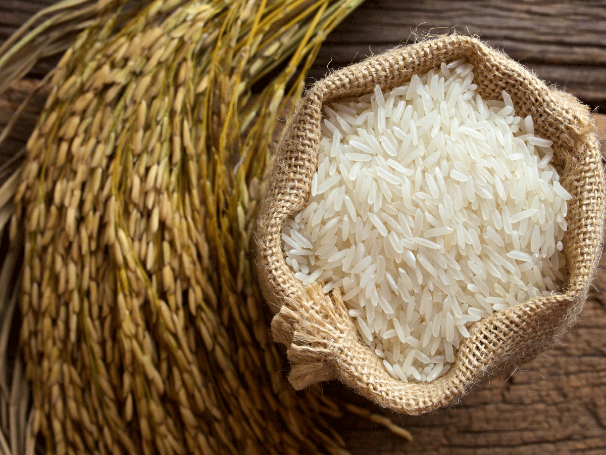

The Traditional System Of Agriculture Has Been In Practice For More Than Ten Thousand Years, And Has Been
Recognized As More Sustainable Than Any Other System Of Agriculture. In
Of Time, During The Late Sixties
Of The Last Century, When The India Faced Shortage Of Food Grains To Feed The Ever Increasing Population, Green
Revolution Was Launched,
Which Led To A Significant Increase In Rice Production, And India Became A Food
Grain (Rice And Wheat) Surplus Country. This Achievement Was Primarily Attributed To Modernization Of
Traditional Practices With The Use Of High Yielding Varieties Of Seeds, Chemical Fertilizers And Pesticides. But
About Forty Years After, It Was Found That Crop Productivity And Production
Has Been Affected Adversely.
There Is Great Loss Of Soil Fertility And Biodiversity.

Kaimur katrani rice - Half Boiled
₹80

Kaimur katrani rice - White Rice
₹100
Kaimur katrani rice - Brown Rice
₹80
At The Heart Of Champaran Organic Is Our Commitment To Be A Living Embodiment Of Love And
Consciousness In Action.
We Work With Thousands Of Small Family Farmers In India To Cultivate Tens Of Thousands Of Acres Of Sustainable
Organic
Farmland.Read More
Organic Rice Production And Farming Is A Holistic Production Management System, Which Avoids The Use Of
Synthetic
Fertilizers, Pesticides, And Genetically Modified Seeds.